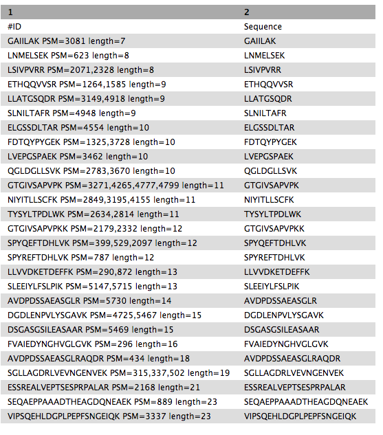

Proteogenomics 2: Database Search
OverviewQuestions:
Objectives:
How to identify variant proteoforms in MS data by searching with the customized Protein database?
Requirements:
A proteogenomic data analysis of mass spectrometry data to identify and visualize variant peptides.
- Introduction to Galaxy Analyses
- Proteomics
- Proteogenomics 1: Database Creation: tutorial hands-on
Time estimation: 15 minutesLevel: Intermediate IntermediateSupporting Materials:Last modification: Jan 24, 2023License: Tutorial Content is licensed under Creative Commons Attribution 4.0 International License. The GTN Framework is licensed under MITpurlPURL: https://gxy.io/GTN:T00232
Introduction
In this tutorial, we perform proteogenomic database searching using the Mass Spectrometry data. The inputs for performing the proteogenomic database searching are the peaklist MGF files and the FASTA database file. The FASTA database is obtained by running the first workflow “Uniprot_cRAP_SAV_indel_translatedbed.FASTA”. The second workflow focuses on performing database search of the peak list files (MGFs).

AgendaIn this tutorial, we will deal with:
Pretreatments
Hands-on: data upload and organization
- Create a new history and name it something meaningful (e.g. Proteogenomics DB search)
- Import the four MGF MS/MS files and the Trimmed_ref_5000_uniprot_cRAP.FASTA sequence file from Zenodo.

https://zenodo.org/record/1489208/files/Mo_Tai_Trimmed_mgfs__Mo_Tai_iTRAQ_f4.mgf https://zenodo.org/record/1489208/files/Mo_Tai_Trimmed_mgfs__Mo_Tai_iTRAQ_f5.mgf https://zenodo.org/record/1489208/files/Mo_Tai_Trimmed_mgfs__Mo_Tai_iTRAQ_f8.mgf https://zenodo.org/record/1489208/files/Mo_Tai_Trimmed_mgfs__Mo_Tai_iTRAQ_f9.mgf
- Copy the link location
Click galaxy-upload Upload Data at the top of the tool panel
- Select galaxy-wf-edit Paste/Fetch Data
Paste the link(s) into the text field
Press Start
- Close the window
- Rename the datasets to something more recognizable (strip the URL prefix)
Build a Dataset list for the three MGF files, name it as “Mo_Tai_MGFs”
- Click on galaxy-selector Select Items at the top of the history panel
- Check all the datasets in your history you would like to include
Click n of N selected and choose Build Dataset List
- Enter a name for your collection
- Click Create List to build your collection
- Click on the checkmark icon at the top of your history again


Match peptide sequences
The search database labelled Uniprot_cRAP_SAV_indel_translatedbed.FASTA is the input database that
will be used to match MS/MS to peptide sequences via a sequence database search.
For this, the sequence database-searching program called SearchGUI will be used.The generated dataset collection of the three MGF files in the history is used as the MS/MS input. We will walk through a number of these settings in order to utilize SearchGUI on these example MGF files.
Comment: Tool VersionsThe tools are subjected to changes while being upgraded. Here we have used an older version of SearchGUI (v3.3.10.1)-Peptide Shaker (v1.16.36.3). The new versions are available in Galaxy.
SearchGUI
Hands-on: SearchGUI
- Search GUI Tool: toolshed.g2.bx.psu.edu/repos/galaxyp/peptideshaker/search_gui/3.3.10.1 with the following parameters:
param-file “Protein Database”:
Uniprot_cRAP_SAV_indel_translatedbed.FASTA(Or however you named theFASTAfile)CommentThe “Uniprot_cRAP_SAV_indel_translatedbed” FASTA database is obtained when you run the first proteogenomics workflow. Please make sure to run the 1st workflow.
param-files “Input Peak lists (mgf)”:
MGF filesdataset collection.
Click the Dataset collection icon on the left of the input field:
Select the appropriate dataset collection from the list
- Section Search Engine Options:
param-check “DB-Search Engines”:
X!TandemCommentThe section Search Engine Options contains a selection of sequence database searching programs that are available in SearchGUI. Any combination of these programs can be used for generating PSMs from MS/MS data. For the purpose of this tutorial, X!Tandem we will be used.
- Section Protein Digestion Options:
- param-select “Enzyme”:
Trypsin- param-text “Maximum Missed Cleavages”:
2- Section Precursor options:
- param-select “Precursor Ion Tolerance Units”:
Parts per million (ppm)- param-text “Precursor Ion Tolerance”:
10- param-text “Fragment Tolerance (Daltons)”:
0.05(this is high resolution MS/MS data)- param-text “Minimum charge”:
2- param-text “Maximum charge”:
6- param-select “Forward Ion”:
b- param-select “Reverse Ion”:
y- param-text “Minimum Precursor Isotope” :
0- param-text “Maximum Precursor Isotope” :
1- Section Protein Modification Options:
- param-select “Fixed Modifications”:
Carbamidomethylation of C, ITRAQ-4Plex of K, ITRAQ-4Plex of Nterminiparam-select “Variable modifications”:
Oxidation of M, ITRAQ-4Plex of YFor selection lists, typing the first few letters in the window will filter the available options.
- Section Advanced Options:
- param-select “X!Tandem Options”:
Advanced
- param-check “X!Tandem: Quick Acetyl”:
No- param-check “X!Tandem: Quick Pyrolidone”:
No- param-check “X!Tandem: Protein stP Bias”:
No- param-text “X!Tandem: Maximum Valid Expectation Value”:
100Once the database search is completed, the SearchGUI tool will output a file (called a SearchGUI archive file) that will serve as an input for the next section, PeptideShaker. Rename the output as “Compressed SearchGUI results”
CommentNote that sequence databases used for proteogenomics are usually much larger than the excerpt used in this tutorial. When using large databases, the peptide identification step can take much more time for computation. In proteogenomics, choosing the optimal database is a crucial step of your workflow.
PeptideShaker
PeptideShaker is a post-processing software tool that processes data from the SearchGUI software tool. It serves to organize the Peptide-Spectral Matches (PSMs) generated from SearchGUI processing and is contained in the SearchGUI archive. It provides an assessment of confidence of the data, inferring proteins identified from the matched peptide sequences and generates outputs that can be visualized by users to interpret results. PeptideShaker has been wrapped in Galaxy to work in combination with SearchGUI outputs.
Comment: File FormatsThere are a number of choices for different data files that can be generated using PeptideShaker. A compressed file can be made containing all information needed to view them results in the standalone PeptideShaker viewer. A
mzidentMLfile can be generated that contains all peptide sequence matching information and can be utilized by compatible downstream software. Other outputs are focused on the inferred proteins identified from the PSMs, as well as phosphorylation reports, relevant if a phosphoproteomics experiment has been undertaken.
Hands-on: PeptideShaker
- Peptide Shaker Tool: toolshed.g2.bx.psu.edu/repos/galaxyp/peptideshaker/peptide_shaker/1.16.36.3 with the following parameters:
- param-file “Compressed SearchGUI results”: The SearchGUI archive file
- param-select “Specify Advanced PeptideShaker Processing Options”:
Default Processing Options- param-select “Specify Advanced Filtering Options”:
Default Filtering Options- param-check “Include the protein sequences in mzIdentML”:
No- param-check “Output options”: Select the
PSM Report(Peptide-Spectral Match) and theCertificate of AnalysisComment: Certificate of AnalysisThe “Certificate of Analysis” provides details on all the parameters used by both SearchGUI and PeptideShaker in the analysis. This can be downloaded from the Galaxy instance to your local computer in a text file if desired.
- Inspect galaxy-eye the resulting files
A number of new items will appear in your History, each corresponding to the outputs selected in the PeptideShaker parameters. The Peptide Shaker’s PSM report is used as an input for the BlastP analysis. Before performing BlastP analysis. The Query Tabular tool and few test manipulation tools are used to remove spectra that belongs to the reference proteins. The output tabular file “Peptides_for_Blast-P_analysis” will contain only those spectra that did not belong to any known proteins.
Create a SQLite database for peptide, protein and genomic annotation visualization
The mzidentml output from the Peptide shaker is converted into an sqlite database file by using the mz to sqlite tool. This sqlite output is used to open the Multi-omics visualization platform, wherein you can view the spectra of the peptides using Lorikeet parameters. To open the MVP viewer, click on the “Visualize in MVP Application” icon ( this will pop-open the interactive multi-omics viewer in a new window/tab)
Hands-on: mz to sqliteThis tool extracts mzidentml and its associated proteomics datasets into a sqlite db
- mz to sqlite Tool: toolshed.g2.bx.psu.edu/repos/galaxyp/mz_to_sqlite/mz_to_sqlite/2.0.4+galaxy1 with the following parameters:
- param-file “Proteomics identification files”:
PeptideShaker_mzidentml- param-file “Proteomics Spectrum files”:
Mo_Tai_MGFs- param-file “Proteomics Search Database Fasta”:
Uniprot_cRAP_SAV_indel_translatedbed.FASTA

The next step is to remove known peptides from the list of PSM’s that we acquired from the Peptide Shaker results. For that we need to perform Query tabular to extract list of known peptides from the UniProt and cRAP database.
Query Tabular
Hands-on: Remove Reference proteins
- Query Tabular tool with the following parameters:
- param-repeat Insert Database Table (b):
PSM report
- Section Filter Dataset Input:
- param-repeat Insert Filter Tabular Input Lines
- “Filter by”:
skip leading lines- “Skip lines”:
1- Section Table Options:
- “Specify Name for Table”:
psms- “Use first line as column names” :
No- “Specify Column Names (comma-separated list)”:
id,Proteins,Sequence- “Only load the columns you have named into database”:
Yes- param-repeat Table Index
- “Table Index”:
No- “Index on Columns”:
idparam-repeat Insert Database Table (c):
PSM report
- Section Filter Dataset Input
- param-repeat Insert Filter Tabular Input Lines
- “Filter by”:
skip leading lines- “Skip lines”:
1- param-repeat Insert Filter Tabular Input Lines
- “Filter by”:
select columns- “Enter column numbers to keep”:
1,2- param-repeat Insert Filter Tabular Input Lines
- “Filter by”:
normalize list columns,replicate rows for each item in the list- “Enter column numbers to normalize”:
2- “List item delimiter in column”:
,- Section Table Options:
- “Specify Name for Table”:
prots- “Use first line as column names” :
No- “Specify Column Names (comma-separated list)”:
id,prot- “Only load the columns you have named into database”:
Yes- param-repeat Insert Table Index:
- “Table Index”:
No- “Index on Columns”:
prot,id- param-repeat Insert Database Table (a):
Reference_Protein_Acessions
- Section Table Options:
- “Tabular Dataset for Table”:
Uniprot- “Use first line as column names” :
No- “Specify Column Names (comma-separated list)”:
prot- param-repeat Insert Table Index:
- “Table Index”:
No- “Index on Columns”:
protCommentBy default, table columns will be named: c1,c2,c3,…,cn (column names for a table must be unique). You can override the default names by entering a comma separated list of names, e.g.
,name1,,,name2would rename the second and fifth columns. Check your input file to find the settings which best fits your needs.“Save the sqlite database in your history”:
NoComment: Querying an SQLite DatabaseQuery Tabular can also use an existing SQLite database. Activating
Save the sqlite database in your historywill store the generated database in the history, allowing to reuse it directly.- “SQL Query to generate tabular output”:
SELECT psms.* FROM psms WHERE psms.id NOT IN (SELECT distinct prots.id FROM prots JOIN uniprot ON prots.prot = uniprot.prot) ORDER BY psms.id- “include query result column headers”:
Yes- Click Run Tool and inspect the query results file after it turned green.
The output from this step is that the resultant peptides would be those which doesn’t belong in the Uniprot or cRAP database. The query tabular tool is used again to create a tabular output containing peptides ready for Blast P analysis.
Hands-on: Query TabularQuery Tabular tool: with the following parameters:
- Section Filter Dataset Input
- param-repeat “Insert Filter Tabular Input Lines”
- “Filter by”:
skip leading lines- “Skip lines”:
1- Section Table Options:
- “Specify Name for Table”:
psm- “Use first line as column names” :
No- “Specify Column Names (comma-separated list)”:
id,Proteins,Sequence- “Only load the columns you have named into database”:
Yes- “SQL Query to generate tabular output”:
SELECT Sequence || ' PSM=' || group_concat(id,',') || ' length=' || length(Sequence) as "ID",Sequence FROM psm WHERE length(Sequence) >6 AND length(Sequence) <= 30 GROUP BY Sequence ORDER BY length(Sequence),Sequence“include query result column headers”:
Yes- Click Run Tool and inspect the query results file after it turned green.

Getting data Blast-P ready
BlastP search is carried out with the PSM report (output from PeptideShaker). Before, BlastP analysis the “Peptides_for_Blast-P_analysis” is first converted from Tabular format to FASTA file format which can be easily read by the BlastP algorithm. This is done with the help of “Tabular to FASTA” conversion tool. The short BlastP uses parameters for short peptide sequences (8-30 aas). Please use the rerun option to look at the parameters used.
Hands-on: Tabular to FASTA (version 1.1.1)
- Tabular-to-FASTA tool: with the following parameters:
- “Title column”:
1- “Sequence Column”:
2
The output FASTA file is going to be subjected to BLAST-P analysis.
Comment: Tool VersionsThe tools are subjected to changes while being upgraded. Thus, running the workflow provided with the tutorial, the user might need to make sure they are using the latest version including updating the parameters.
Conclusion
This completes the walkthrough of the proteogenomics database search workflow. This tutorial is a guide to perform database searching with mass spectronetry files and have peptides ready for Blast-P analysis, you can perform follow up analysis using the next GTN “Proteogenomics Novel Peptide Analysis”. Researchers can use this workflow with their data also, please note that the tool parameters, reference genomes and the workflow will be needed to be modified accordingly.
This workflow was developed by the Galaxy-P team at the University of Minnesota. For more information about Galaxy-P or our ongoing work, please visit us at galaxyp.org
Key points
With SearchGUI and PeptideShaker you can gain access to multiple search engines
Frequently Asked Questions
Have questions about this tutorial? Check out the tutorial FAQ page or the FAQ page for the Proteomics topic to see if your question is listed there. If not, please ask your question on the GTN Gitter Channel or the Galaxy Help ForumUseful literature
Further information, including links to documentation and original publications, regarding the tools, analysis techniques and the interpretation of results described in this tutorial can be found here.
Feedback
Did you use this material as an instructor? Feel free to give us feedback on how it went.
Did you use this material as a learner or student? Click the form below to leave feedback.

Citing this Tutorial
- Subina Mehta, Timothy J. Griffin, Pratik Jagtap, Ray Sajulga, James Johnson, Praveen Kumar, Proteogenomics 2: Database Search (Galaxy Training Materials). https://training.galaxyproject.org/training-material/topics/proteomics/tutorials/proteogenomics-dbsearch/tutorial.html Online; accessed TODAY
- Hiltemann, Saskia, Rasche, Helena et al., 2023 Galaxy Training: A Powerful Framework for Teaching! PLOS Computational Biology 10.1371/journal.pcbi.1010752
- Batut et al., 2018 Community-Driven Data Analysis Training for Biology Cell Systems 10.1016/j.cels.2018.05.012
Congratulations on successfully completing this tutorial!@misc{proteomics-proteogenomics-dbsearch, author = "Subina Mehta and Timothy J. Griffin and Pratik Jagtap and Ray Sajulga and James Johnson and Praveen Kumar", title = "Proteogenomics 2: Database Search (Galaxy Training Materials)", year = "", month = "", day = "" url = "\url{https://training.galaxyproject.org/training-material/topics/proteomics/tutorials/proteogenomics-dbsearch/tutorial.html}", note = "[Online; accessed TODAY]" } @article{Hiltemann_2023, doi = {10.1371/journal.pcbi.1010752}, url = {https://doi.org/10.1371%2Fjournal.pcbi.1010752}, year = 2023, month = {jan}, publisher = {Public Library of Science ({PLoS})}, volume = {19}, number = {1}, pages = {e1010752}, author = {Saskia Hiltemann and Helena Rasche and Simon Gladman and Hans-Rudolf Hotz and Delphine Larivi{\`{e}}re and Daniel Blankenberg and Pratik D. Jagtap and Thomas Wollmann and Anthony Bretaudeau and Nadia Gou{\'{e}} and Timothy J. Griffin and Coline Royaux and Yvan Le Bras and Subina Mehta and Anna Syme and Frederik Coppens and Bert Droesbeke and Nicola Soranzo and Wendi Bacon and Fotis Psomopoulos and Crist{\'{o}}bal Gallardo-Alba and John Davis and Melanie Christine Föll and Matthias Fahrner and Maria A. Doyle and Beatriz Serrano-Solano and Anne Claire Fouilloux and Peter van Heusden and Wolfgang Maier and Dave Clements and Florian Heyl and Björn Grüning and B{\'{e}}r{\'{e}}nice Batut and}, editor = {Francis Ouellette}, title = {Galaxy Training: A powerful framework for teaching!}, journal = {PLoS Comput Biol} Computational Biology} }
Go FurtherDo you want to extend your knowledge? Follow one of our recommended follow-up trainings:
- Proteomics
- Proteogenomics 3: Novel peptide analysis: tutorial hands-on
Galaxy Administrators: Install the missing toolsYou can use Ephemeris's
shed-tools installcommand to install the tools used in this tutorial.shed-tools install [-g GALAXY] [-a API_KEY] -t <(curl https://training.galaxyproject.org/training-material/api/topics/proteomics/tutorials/proteogenomics-dbsearch/tutorial.json | jq .admin_install_yaml -r)Alternatively you can copy and paste the following YAML
--- install_tool_dependencies: true install_repository_dependencies: true install_resolver_dependencies: true tools: - name: tabular_to_fasta owner: devteam revisions: 0a7799698fe5 tool_panel_section_label: Proteomics tool_shed_url: https://toolshed.g2.bx.psu.edu/ - name: mz_to_sqlite owner: galaxyp revisions: f5c632894818 tool_panel_section_label: Proteomics tool_shed_url: https://toolshed.g2.bx.psu.edu/ - name: peptideshaker owner: galaxyp revisions: 7fdd9119cc4f tool_panel_section_label: Proteomics tool_shed_url: https://toolshed.g2.bx.psu.edu/ - name: peptideshaker owner: galaxyp revisions: 7fdd9119cc4f tool_panel_section_label: Proteomics tool_shed_url: https://toolshed.g2.bx.psu.edu/ - name: query_tabular owner: iuc revisions: 33d61c89fb8d tool_panel_section_label: Proteomics tool_shed_url: https://toolshed.g2.bx.psu.edu/